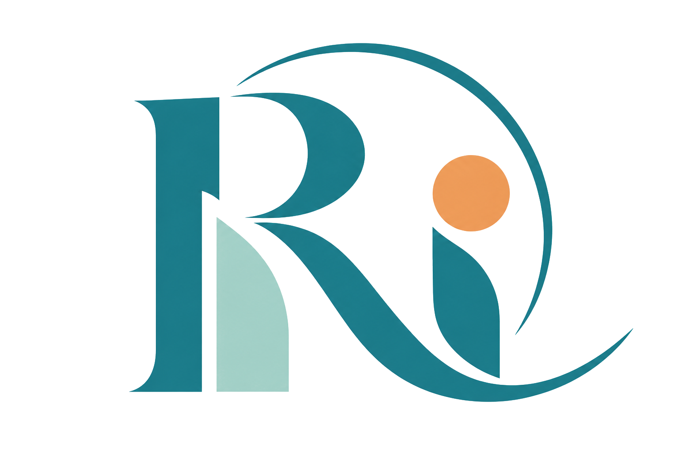

HIROSHIMA · MIHARA
ひとりひとりの
笑顔が育つ、
あたたかな居場所。
みんなの笑顔があふれる居場所づくり。
それぞれの「自分らしさ」を大切に、地域に根ざした支援を届けます。

株式会社RANON✳
SCROLL TO EXPLOREやさしく、楽しく、あなたらしく。
01 / ABOUT US
その子らしく、
その人らしく。
株式会社RANONは、障害のある方が暮らしやすく、自分らしく過ごしていくための障害福祉サービスを提供しています。
ご本人とご家族の気持ちに寄り添いながら、安心できる場所と、一人ひとりの可能性が広がる毎日を大切にしています。
地域とともに歩む、株式会社RANON
02 / OUR FACILITIES
あなたに合った
居場所を見つける。
それぞれに特色のある事業所をご紹介します。
気になる事業所から詳しい内容をご覧ください。


03 / INFORMATION
ご家族向け資料
法人全体の取り組みや、いただいたご意見をご覧いただけます。
株式会社RANON
〒723-0051
広島県三原市宮浦3丁目24-1
TEL：0848-64-6227
MAIL：ranon.mihara@outlook.jp
平日 9:30〜18:00
土・祝日 8:00〜17:00